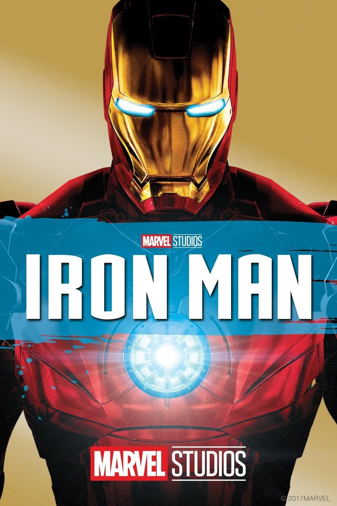
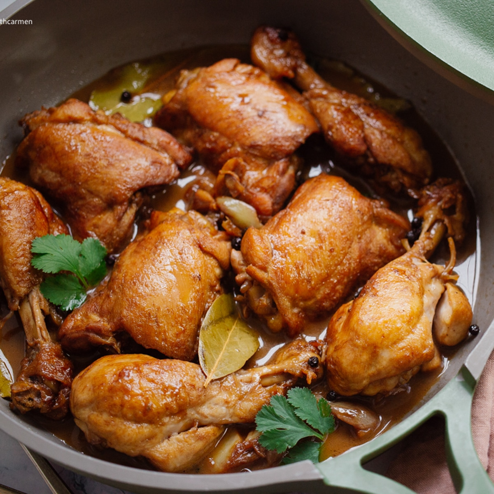
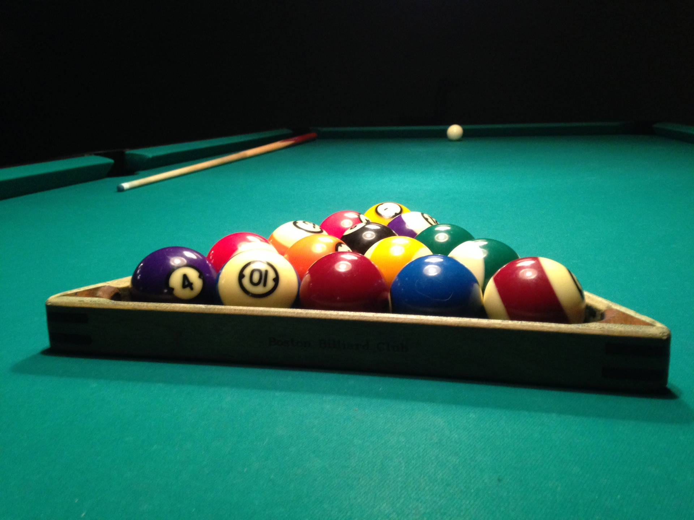
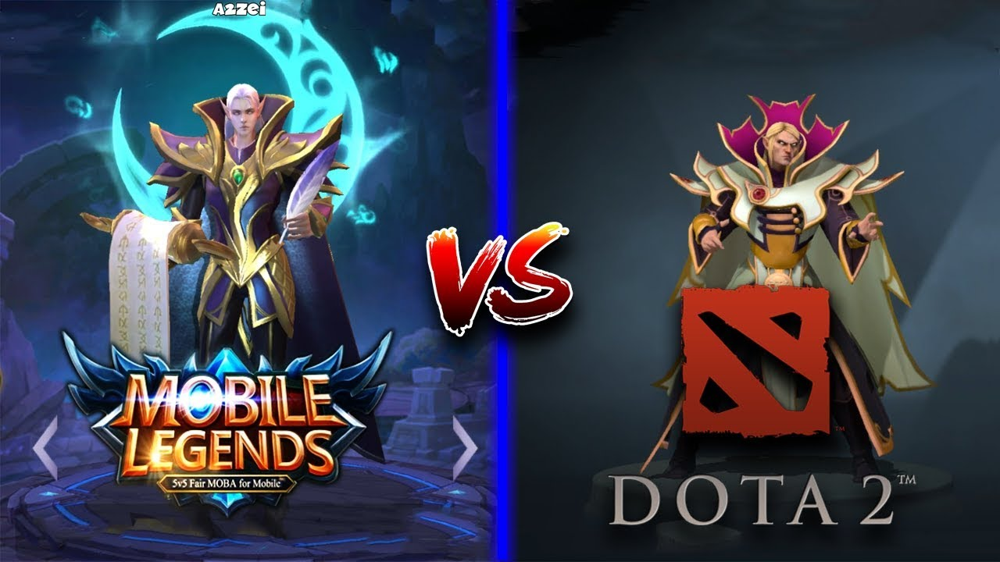

My Top 10 Favorites
1. Movie
Iron Man - An action-packed thriller with lots of twists and turns.
2. Food
Adobo - A delicious dish from my mom.
3. Music

SuperPowers - A genre of music that resonates with my emotions.
4. Sport

Soccer(football)- A thrilling sport that I enjoy watching or playing..
5. Animal

Cat - A cute and cuddly creature that brings joy to my life.
6.Color
Black&White- A vibrant hue that reflects my personality.
7. Game
Billiard- An exciting game that challenges my skills and strategy.
8. Outdoor Activity
Camping - Immersing oneself in the great outdoors.
9. Online Games
Mobile Legend&Dota - An immersive experience where individuals connect to virtual worlds through the internet.
10. Movie Character
Tony Stark/Iron Man - His technology is always very advanced.